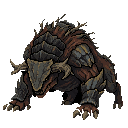
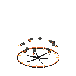
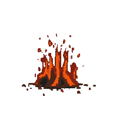

Pixel Survivor · PixelLab · Concept review 01
Маг в одном мире с остальным ростером
Четыре самостоятельных варианта с более простой одеждой, крупными цветовыми массами и умеренной детализацией. Это один статичный ракурс на вариант: никаких замен в игре, новых направлений и анимаций пока нет.
Загрузка локальных PNG…
A · Наследник
Ближе к нынешнему образу: открытое лицо, синий и зелёный, минимум золота.
B · Капюшон
Самый явный силуэт мага. Большие массы плаща и скрытое капюшоном лицо.
C · Боевой маг
Короткая одежда и открытые ноги: удобная база для быстрого бега и жестов.
D · Пепельный плащ
Светлая пепельная накидка, спокойная палитра, несколько широких складок.
Оригиналы 96×96 с прозрачностью; показаны без размытия. A/B/C — 28 цветов, D — 20. Сравнение силуэтов и одежды; будущий production pass отдельно проверит top-down ракурсы, позы и landmarks.
Сравнение с текущей моделью
Статичная локальная композиция, не screenshot новой модели в игре. Слева — текущий герой; кандидатам назначена та же видимая высота 34.7 world px только для честного preview. Новые world scale и hitbox не назначены. Вторая строка показывает тот же размер при mobile zoom≈1.28.
Лист для выбора
Принятые локальные ориентиры
Ash Warden — основной ориентир мира; Meteor C / Flame Strike C — эталоны магии. Briar Beast показан как дополнительный принятый минибосс. Его имя не подменяет указанный в brief Hound. Эти изображения сравниваются локально и не отправлялись в PixelLab.
 Ash Warden — текущая игровая модель, south-idle. Свежий игровой кадр
Ash Warden — текущая игровая модель, south-idle. Свежий игровой кадр

Briar Beast — принятый минибосс

Meteor C — impact

Flame Strike C — всплеск
Руководство по стилюДорожная картаЧто проверено и что дальше
PixelLab Pro Flash, 4 генеративных запроса, 20 единиц подписки, $0 денежных API-кредитов. Исходники, prompts, seeds и job IDs сохранены. Выбор A / B / C / D ещё не сделан.